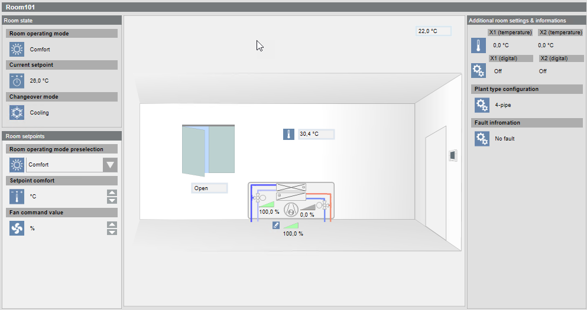

Operating the RDF302 room thermostat

Prerequisites:
- System Manager is in Operation mode.
- In System Browser, Logical View is selected.
Step:
- In the System Browser or floor plan view, select the room to operate. The graphical view is based on the applied FNC configuration.
Changing Operating Mode
- Select Room operating mode .
- In the Room operating mode drop-down list, select option:
- Comfort
- Economy
- Pre-Comfort
- Protection - The value is immediately written to the device.
Changing a Setpoint
- Select Setpoint for Comfort .
- Enter the new setpoint between 5…40°C or use the up or down arrows.
- The value is immediately written to the device.
Manually Enter the Fan Command Value
- Select Fan Command Value .
- Enter the new value or use the up or down arrows.
- The value is immediately written to the device.